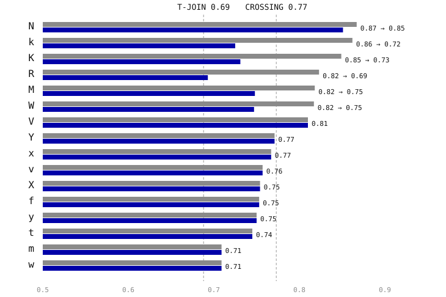
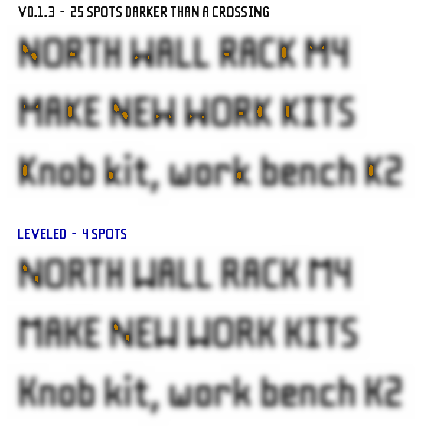

Capital K
0.85 → 0.73Top: v0.1.3. Bottom: leveled.
- Darkest spot
- 0.85 → 0.73
- Finishing fill
- 3.87 → 0.00 w²
- Max thickness
- 4.17 → 2.50 w
- Ink width
- 7.50 → 7.50 w
- Closest pair in sample
- 2.02 w
Type designers call how dark a letter reads its color. In Fillaprint almost all of the uneven color comes from joints: where two strokes meet at an acute angle, finishing fills the narrow wedge between them (a real print would fill it anyway), and the joint reads as a dark spot.
Each letter is measured on its finished outline: blur it by 1.5w, about how a joint reads at label size, and take the darkest spot (1.0 would be solid ink across the whole blur). The joints every 2w-stroke letter is made of set the scale: a plain stroke reads 0.52, an L corner 0.61, a T-join 0.69 and a crossing 0.77. The target was no letter darker than a plain crossing, because t, f, x and X need crossings and cannot get lighter than one.
Seven letters were darker than that. The leveled candidate changes five of them (K, k, R, M, W) and partly levels N. It keeps every rule the font is built on: 2w strokes, 2w gaps, the 4.85w thickness limit, the spacing checks, and a 10w limit so every letter still fits Fillaprint Mono.

Grey: v0.1.3. Blue: leveled. Letters not listed read lighter than a crossing already.
The same lines set in both fonts and blurred by 1.5w. Amber marks every spot darker than a plain crossing.

Top: v0.1.3. Bottom: leveled.
Top: v0.1.3. Bottom: leveled.
Top: v0.1.3. Bottom: leveled.
Top: v0.1.3. Bottom: leveled.
Top: v0.1.3. Bottom: leveled.
Top: v0.1.3. Bottom: leveled.
N (0.87 → 0.85). N's diagonal crosses the full height between two stems, so it meets each stem at about 35°, and three 2w strokes plus two 2w gaps need more than the 10w Mono allows. Every construction tried with the stems upright (round, kinked or shouldered joins, slanted stems) was as dark or darker; a 12w N reaches only 0.82. Widening it to 10w, like M and W, is the step that fits.
V (0.81). The darkness is the point itself, where the arms converge. It changes only with width, and CV2 is the widest V that fits Mono; it was chosen in review, so it is left as it is.
Crossings: Y 0.77, x 0.77, X 0.75, y 0.75. These sit at or just below a plain crossing (0.77), which is the floor for any letter whose strokes cross.
Overall darkness. Letters also differ in how much ink they carry: B, 8 and g have three bars where T and L have one or two. That is structural and the same in every typeface; spacing, not shape, evens it out in text, and this candidate does not change spacing rules. Spacing around the edited letters is recomputed by the build as usual.
The leveled fonts were rebuilt with the font's own build.py from v0.1.3 plus the edits above, and passed every geometry, outline and spacing check it runs:
Fillaprint 376 glyphs, 35872 class pairs + 7839 exceptions | readback within 0.0236w, max 4.844, thin none | pieces >= 2.0, joined none | lines min gap 2.0, gap dev <= 0.082, drift <= 0.393
Fillaprint Tab 376 glyphs, 35995 class pairs + 7838 exceptions | readback within 0.0236w, max 4.844, thin none | pieces >= 2.0, joined none | lines min gap 2.0, gap dev <= 0.082, drift <= 0.393
Fillaprint Mono 362 glyphs, 0 class pairs + 0 exceptions | readback within 0.0297w, max 4.844, thin none | pieces >= 2.0, joined none | lines min gap 2.26, gap dev <= 0.02, drift <= 0.016
all checks passThe font's test suite: 125 of 128 tests pass on the leveled fonts. The rest pin the v0.1.3 shapes these edits change on purpose, and would be updated with them:
test_diagonals_are_exposed pins N's diagonal at its 9w position (1.111, -4, 7.889, 10); the leveled N's is 8.889.test_cache_hits_keep_their_fill uses Ń as a glyph with more than 5 w² of fill; the leveled N carries 4.86.test_pieces_joined_by_finishing_fail_as_in_the_build edits the arm of Mono's old k to test its designed join; the spur k has no designed join.These are geometry checks, not print tests. To print a test label, install the candidate beside the released fonts; it is named Fillaprint Leveled so it does not replace them: Fillaprint Leveled · Fillaprint Leveled Mono.
Measurements, sources and provenance: color.json. Generated by scripts/build-fillaprint-color-leveling.py.